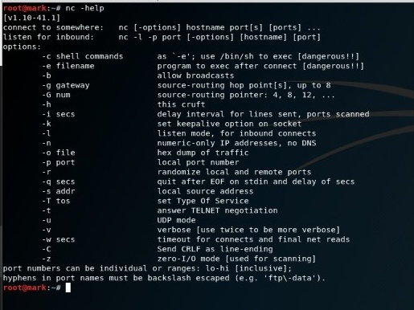
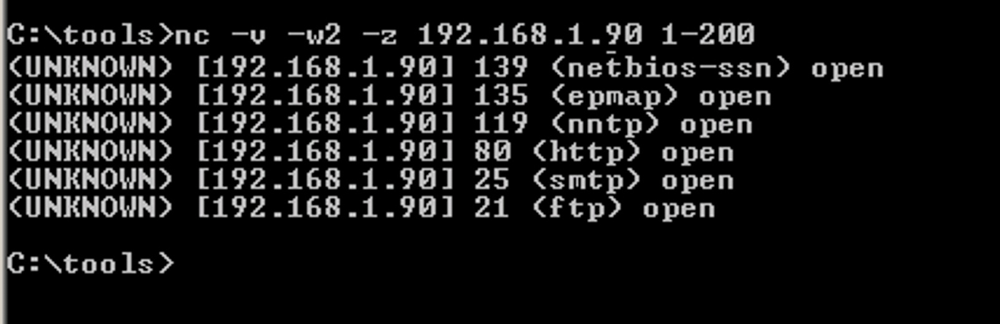
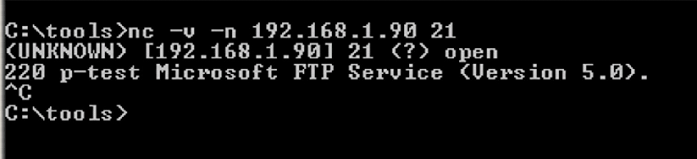

ABOUT
This blog is about Netcat(nc).It is also referrred to as Hackers swiss army knife because of amount of function and tasks it can execute.It's an utility that is able to write and read data across TCP and UDP network.If you are in systems security or networks security field then you should know about Netcat.Netcat is useful in penetration testing(any OS),port scanning,port listner,port redirector,file sharing.....

INSTALLATION
LINUX
It's an inbuild software in Linux machines.You can check it's version by typing the following code in terminal.
nc -helpYou should get like this.
If it's not installed or you wanna update netcat,then type the following command in terminal.
sudo apt-get install netcatWINDOWS
It's an external tool in Win OS.You can install it from here.
Save the folder in desktop & extract it,copy it's address and open command prompt.
Then type cd C:\Users\Mark Sathish\Desktop\nc111nt and press enter. (Note that your file address should be typed along with cd not mine)
Now you can check whether nc is installed or not by typing the following command.
nc.exe -h NOTE :
Your antivirus might had warned you netcat as Virus or Trojan ahead.Yup,malicious users use Netcat as a means of gaining remote access to a system. In this sense, it is understandable why many anti-virus programs labeled Netcat as a “trojan” or a “hacktool.” Some anti-virus programs may try to prevent you from downloading or installing Netcat.So you should configure your antivirus to exclude this particular operation.
GETTING STARTED
Before going into netcat uses lets see the options we use here.
-d : detach from console, background mode
-e : prog inbound program to exec [dangerous!!]
-g : gateway source-routing hop point[s], up to 8
-G : num source-routing pointer: 4, 8, 12, ...
-h : this cruft
-i : secs delay interval for lines sent, ports scanned
-l : listen mode, for inbound connects
-L : listen harder, re-listen on socket close
-n : numeric-only IP addresses, no DNS
-o : file hex dump of traffic
-p : port local port number
-r : randomize local and remote ports
-s : addr local source address
-t : answer TELNET negotiation
-u : UDP mode
-v : verbose [use twice to be more verbose]
-w : secs timeout for connects and final net reads
-z : zero-I/O mode [used for scanning]
FEATURES :
PORT SCANNING
Netcat is one of the major tool used for port scanning after Nmap.
Mati Aharoni, a back track developer has said "It’s not always the best tool for the job, but if I was stranded on an island, I’d take Netcat with me".I guess you can now understand the importance of nc.
You can scan ports of target ip by typing the following code
Syntax : nc –[options] [Targetipaddress] [ports]Example : nc -v -w2 -z 192.168.1.90 1-200
In the above example,nc wil try to connect to every port between 1 to 200 of the target ip : 192.168.1.90.
You should get the following result.
GRABBING BANNER
So from the above image i got some open ports.I want to know about the device information that's associated with my chosen targets's open port.Type the following code in terminal.
Syntax : nc –[options] [Targetipaddress] [open_port]Example : nc -v -n 192.168.1.90 21

So we know it’s a Windows 2000 machine as it's running IIS 5.0 and Microsoft FTP Service.
FILE SHARING
For file sharing,you must be having 2 PC's or 1 device having virtual machine.
Let's say i have windows and kali devices.
First you should know your machines ip address by typing the following.
windows : ipconfig Kali linux : ifconfigCreate a file either in windows or kali(for simplicity let it be .txt file with some info in it).
I created my file in windows as abc.txt.So windows sends the file(abc.txt) and kali linux receives it through netcat.Hence we can name the file in kali according to our wish.Let it be test.txt.But the data in test.txt will be same as of abc.txt.
Let assume windows ip & kali's ip be 192.168.1.82 and 192.168.1.90 respectively.Now open kali terminal and type the following
Syntax : nc [Targetipaddress] [listen_on][random_file_name.txt]Example : nc 192.168.1.90 4444>test.txt
In the above example netcat listens on '4444' port number.[listen_on] can be of our wish but the same port id should written in windows.It means we ourself are creating a port having id : 4444 and calling windows to send the data.
'>' refers to redirect data(receiving it).
Now leave virtual machine and go to windows,open command prompt and type the following.
Syntax : nc –[options] [listen_id][file_created.txt]Example : nc -lvp 4444<abc.txt
After you press enter,goto kali linux,open terminal and type
ls
cat test.txt
After you type 'ls' you can see test.txt in results.Then type 'cat test.txt',you can see the data associated with it.
Tada,your file is shared.Like this you can transfer any file.
Note : Hackers send malacious data by knowing your ip and your open ports.They can send files like .exe thereby stealing data.So ensure your firewall or antivirus is always ON.I was able to send data to my friend PC with LAN open,but was't able to install the .exe file :-(
SIMPLE CHAT INTERFACE
It's almost same as that of file sharing.you just need to create an open port,call the port from both the machines and connect them.I guess you can clearly understand it with the help of an example.
Syntax(windows) : nc [options] [listen_id]Example : nc -lvp 5555
Syntax(kali) : nc [target_ip] [listen_id]Example : nc 92.168.1.82 5555
That's what i know & to share.There are many more hacking tricks on Github and some Tech Websites.You can easily adapt them with these practises.Thanks for Reading.